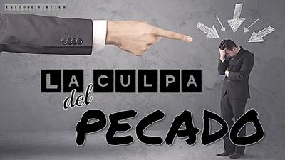

Hasta los psiquiatras más expertos se sorprenden de la capacidad de la mente humana para generar emociones complejas… y más todavía la creatividad con que ciertas instituciones —especialmente las religiones abrahámicas— han aprendido a manipularlas. Y entre todas las emociones disponibles, la culpa ha sido su herramienta predilecta: barata, renovable y extremadamente eficaz.


Pero empecemos por definir qué es la culpa: en términos psicológicos, la culpa es una emoción social autorreferencial, que surge cuando el individuo evalúa que ha transgredido un estándar moral o una norma internalizada. Es un mecanismo evolutivo útil en sociedades cooperativas: ayuda a reparar daños, inhibe conductas antisociales, y promueve cohesión grupal. Hasta ahí, todo bien. Un sentimiento de culpa en niveles sanos, induce al arrepentimiento y la corrección de los errores, mientras que la ausencia de culpa, junto con la falta de empatía y de remordimiento, es una característica central de los psicópatas.
El problema surge cuando esos estándares morales no son naturales, ni son propios, ni se basan en el bienestar humano… sino en órdenes incuestionables supuestamente emitidas por seres invisibles. Y peor aún: cuando se inducen desde la infancia como verdades absolutas. Porque si no lo sabías, la culpa no es innata: es aprendida. Y para activarse necesita un contexto que defina lo que es permitido y lo que es prohibido, y luego un proceso de internalización.
¿Cómo se construye eso?
Primero: se repite una norma o dogma hasta que el niño deja de cuestionarla.
Luego: se asocia la desobediencia con consecuencias graves, reales o imaginarias.
Finalmente: el niño incorpora ese patrón como parte de su identidad.
Es decir: instalas en la mente del niño un pequeño juez interno, severo y vigilante, que jamás se toma vacaciones. Algo que las religiones abrahámicas saben desde hace milenios. No por nada dedican tanto esfuerzo a «educar» a los niños antes de que desarrollen pensamiento crítico. Porque un adulto duda, mientras que un niño simplemente absorbe. Así, la inducción de culpa es ridículamente sencilla cuando se trabaja con mentes no formadas: basta mezclar autoridad, castigo y narrativas absolutas. Y para las religiones eso es sumamente ventajoso.
De hecho, las religiones abrahámicas construyeron su imperio emocional sobre una idea brillante en su simpleza: Si cometiste «pecado», porque desobedeciste alguna de las órdenes divinas, eres culpable, pero si no lo hiciste también lo eres, porque eres pecador de nacimiento, y aunque tú no hayas hecho nada malo, tus ancestros sí lo hicieron, y tanto el pecado como la culpa hereditarios, existen.
Mesopotamia ya había inventado la culpa como transferencia de responsabilidad: si algo malo ocurre, es tu culpa. No la de los gobernantes, no la de la injusticia, ni la de la mala suerte. Es tuya. Siempre tuya. Las religiones simplemente industrializaron el proceso.
Por supuesto, desde el punto de vista de la psiquiatría, sentir culpa por acciones ajenas es un delirio moral inducido. Aunque en el ámbito religioso está institucionalizado y se venera como virtud.
De esta forma, las religiones abrahámicas han perfeccionado una tríada de falacias relacionadas con la culpa:
Inferioridad: Tú eres un ser imperfecto de nacimiento, y eso te ubica en una posición inferior.
Culpabilidad: Eres culpable de cometer pecado (o de que otros lo hayan hecho), y eso ofende a «Dios».
Redención: Nosotros podemos resolver eso si sigues nuestras reglas, porque de nosotros depende que obtengas redención por tus pecados.
Es, sin duda, un mecanismo de poder impecable. Y lo peor, socialmente aceptado. Pero el cristianismo y el islam tienen otro elemento muy poderoso para controlar a la gente: el infierno, un gran generador de culpa. Antes de que Jesús introdujera el concepto de infierno eterno (Mateo 5:22), las personas vivían con suficiente miseria real como para preocuparse por castigos imaginarios. Pero el concepto de infierno cambió todo, creando un sistema emocional perfecto, donde la amenaza eterna se convierte en una prisión psicológica que justifica cualquier doctrina.
Ahora bien, resulta que la culpa tiene también efectos fisiológicos en nuestro cuerpo, interviniendo varios órganos o sistemas, como la amígdala (que funciona como una alarma emocional), la corteza prefrontal (que interviene en la rumiación obsesiva), el sistema nervioso autónomo (provocando un aumento del cortisol, tensión muscular, y hasta problemas digestivos) y el eje hipotálamo–hipófisis–adrenal (cuando el estrés crónico desgasta el sistema inmunológico).
En otras palabras, una culpa persistente es básicamente una tortura bioquímica de bajo voltaje, pero constante. Y por supuesto, todo esto es más abrumador cuando se trata de niños. Pocas cosas son tan dañinas como inculcar culpa a un niño pequeño, porque el cerebro infantil está en pleno proceso de desarrollo, y sus circuitos emocionales son plásticos y altamente sensibles.
El resultado es devastador cuando a un niño le transmites, directa o indirectamente, ideas como estas:
Tu mente es peligrosa, a veces te hace pensar en «cosas malas».
Tu curiosidad es «pecado».
Algunas de tus emociones «ofenden a Dios».
Tu cuerpo tiene partes que son «sucias» ante los ojos de «Dios».
Tus dudas, cuando te hacen pensar en cosas contrarias a lo que te ha enseñado tu religión, son obra del demonio.
Tú, por sólo el hecho de existir, ya eres un pecador, ya que heredaste la culpa de la primera pareja de humanos.
Y las secuelas psíquicas más frecuentes en niños educados en la culpa religiosa son:
Ansiedad crónica: el niño vive esperando castigo.
Trastorno obsesivo-compulsivo religioso (scrupulosity): miedo permanente a pecar.
Depresión infantil: sentimiento de inutilidad y autodesprecio.
Apego inseguro: si ni «Dios» los acepta, ¿quién lo hará?
Inhibición del pensamiento crítico: cuestionar es «malo», así que el niño inhibe procesos cognitivos esenciales.
Culpa patológica en la adultez: el yo se forma sobre la premisa «soy malo por naturaleza».
Disociación afectiva y corporal: el cuerpo es fuente de pecado, así que se aprende a desconectarse de él.
Dependencia de la autoridad: si toda moral viene de arriba, la autonomía nunca germina.
Esto, en psiquiatría se llama ‘indefensión aprendida’: el niño deja de actuar, porque todo lo que haga será insuficiente o será «pecado». Y un niño indefenso es fácilmente controlable en la adultez. Exactamente lo que conviene a las religiones y a los gobernantes, siendo la culpa una muy útil estrategia emocional.
La culpa es útil para los líderes religiosos fundamentalmente por dos razones:
Es paralizante: una persona que se siente culpable no piensa, no cuestiona, no pelea.
Es interminable: siempre hay algo más por lo cual sentirse culpable.
La ciencia, en cambio, nos recuerda que equivocarse es parte natural del aprendizaje humano, y que rumiar culpas no resuelve nada. Es verdad, la culpa sana sirve para reparar, pero la culpa religiosa sirve para someter. Y lo más absurdo es sentirse culpable por «leyes» de tribus del desierto, por narraciones míticas, por eventos causados por una serpiente que hablaba, por personajes inexistentes. Eso es igual que culparse por desobedecer las reglas de un cuento infantil. Pero cuando así te lo enseñan antes de que puedas razonar, esa concepción errada de la realidad se incrusta en lo más profundo de tu yo.
Digamos en conclusión que la culpa impuesta —esa que no nace de nuestros valores, sino de presiones externas— es un lastre emocional que deforma la identidad y mutila la autonomía. Las religiones abrahámicas han explotado ese mecanismo por siglos, especialmente en los más vulnerables: los niños. Y liberarse de esa culpa no es sólo un acto de salud mental, es un acto de emancipación humana. Es necesario desactivar esa culpa para recuperar la salud mental, porque la vida no mejora repitiendo «mea culpa», sino aprendiendo, actuando y tomando responsabilidad real, pero no imaginaria, sino por nuestras acciones.
[Godless Freeman]
[Crédito de imagen: Estudio bíblico «La culpa del pecado»]
https://elpais.com/elpais/2019/01/07/eps/1546863563_564035.html
https://ibipa.org/predicaciones/estudio-biblico-la-culpa-del-pecado/
Comentarios
Comments powered by Disqus